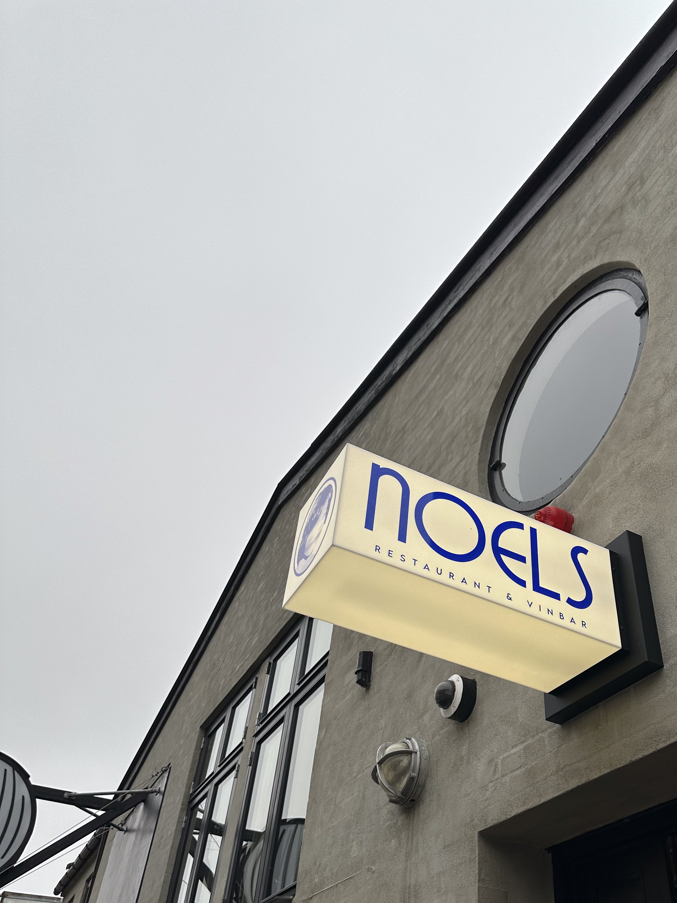
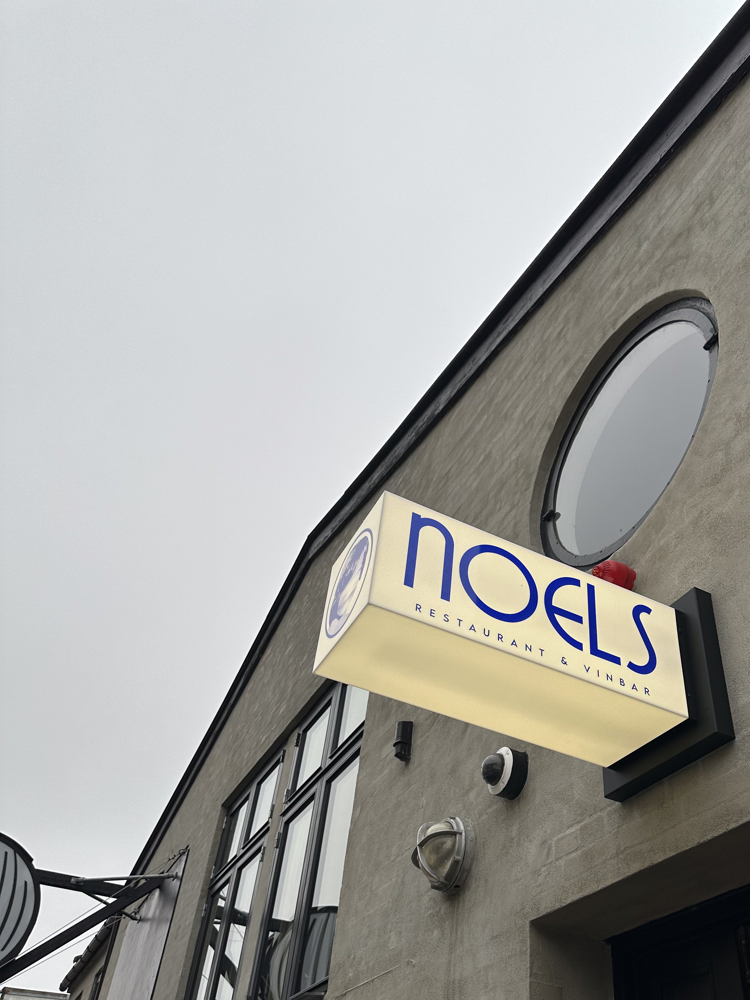

VILD MED VIN
Interview med Noel Koch-Søfeldt
Noel, en person med passion for VIN. Her en lille snak om hvor det hele startede, hvorfor naturvin blev sat i fokus og hvordan det (ikke) er, at have nogen at dele sin passion med.
Til dagligt er han restaurent chef hos Noel's på Sigurdsgade. Besøg ham der, og få serveret skøn vin, med verdensklasse service, af en der ved hvad han snakker om.

Noel foran Noel's på Sigurdsgade
billeder


 
